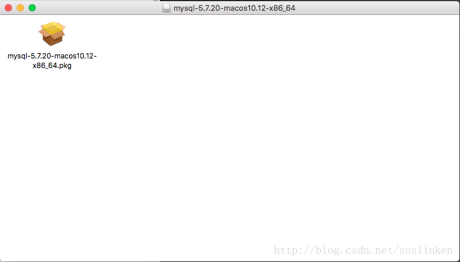
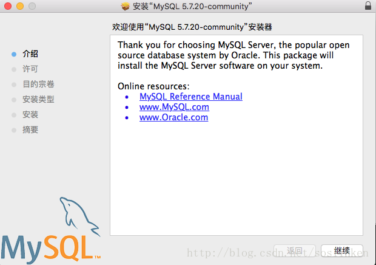
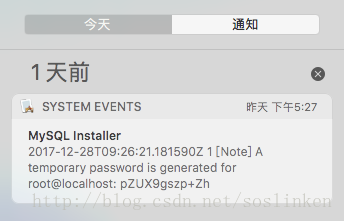

00 Mac 下安装mysql
1- 最新版本的，安装的时候会让设置root 用户密码。所以不用记录临时密码。
2- 启动
终端界面下输入
sudo /usr/local/mysql/support-files/mysql.server start
启动mysql服务,启动成功后继续输入
mysql -u root -p
此时终端将让你输入密码12345678
原文:https://blog.csdn.net/soslinken/article/details/78927963
下载mysql dmg安装包
在msql 官方网站上下载 mysql 社区版本的dmg安装包
GUI安装
下载完成后，打开dmg文件后，会出现后缀名为pkg的安装文件。 
双击执行，验证安装包结束之后就会进入mysql的gui安装界面。  然后就下一步下一步下一步，直到安装结束。
默认root 密码
与windows下安装不同的是，mac os 下安装完成后不会让你配置root用户。会默认生成一个root用户并给予一个随机的密码。随机密码生成后会在mac os的系统通知里生成一条系统通知消息。
随机生成的密码一定要用记事本记下来，后面要用，非常重要，非常重要，非常重要！！！
系统状态栏 右上角 列表图标
点击列表图标后，展开系统通知界面  在其中就能看到随机生成的root密码。
配置环境变量
$ cd ~
$ vim ./.bash_profile
进入vim 编辑环境。 按下i 进入 insert 模式 输入
export PATH=$PATH:/usr/local/mysql/bin
按下esc 退出 insert 模式 输入
:wq
保存配置文件。 在终端界面下输入
source ~/.bash_profile
echo $PATH
查看系统环境变量是否设置成功。
启动 mysql 服务
终端界面下输入
sudo /usr/local/mysql/support-files/mysql.server start
启动mysql服务,启动成功后继续输入
mysql -u root -p
此时终端将让你输入密码，使用之前在系统通知中获取到的随机密码。

登录进入msql 控制台后，使用 set password 指令将随机密码修改为用户自定义的密码。
set password = password('123456');
至此安装mysql 成功！此时就可以愉快的使用mysql 服务了。
没有记录随机密码的重置密码方案
mysqladmin -u root password [password]
执行该命令，会有一个警告提示，但是密码仍旧是修改成功了。 再使用修改后的密码登录，即可使用mysql服务。
ERROR! The server quit without updating PID file (/usr/local/mysql/data/CookiedeMacBook-Pro.local.pid).
这种问题一查是第三种：https://blog.csdn.net/cjfeii/article/details/48494089
即安装完就已经启动了。
1 可能是/home/mysql/data/mysql.pid文件没有写的权限
# chown -R mysql:mysql /home/mysql/data
or
# chmod -R 755 /home/mysql/data1
2 初始化数据库
/usr/bin/mysql_install_db --user=mysql
3 可能进程里已经存在mysql进程
# ps -ef|grep mysqld
# kill -9 ${mysql_pid}
4 可能是第二次在机器上安装mysql，有残余数据影响了服务的启动。
# rm /home/mysql/data/mysql-bin.index
5 selinux惹的祸，如果是centos系统，默认会开启selinux
# cat /etc/selinux/config
SELINUX=disabled
# reboot